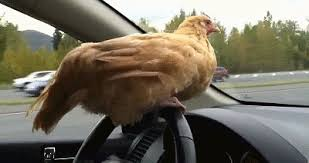
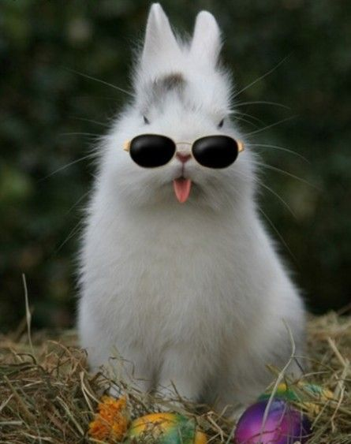
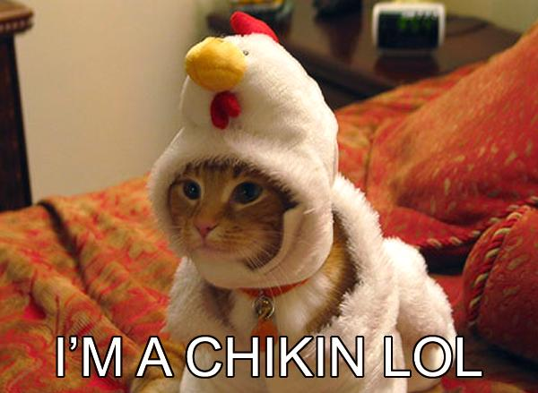
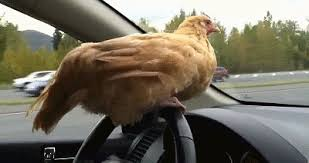

and watching them eat :)
You are probably thinking this blog was made by a lady.
You are wrong!
The world has tricked you into thinking pink is for ladies
- Chicken

- Rabbits

- Cats

- Chicks

You are wrong! The world has tricked you into thinking pink is for ladies
